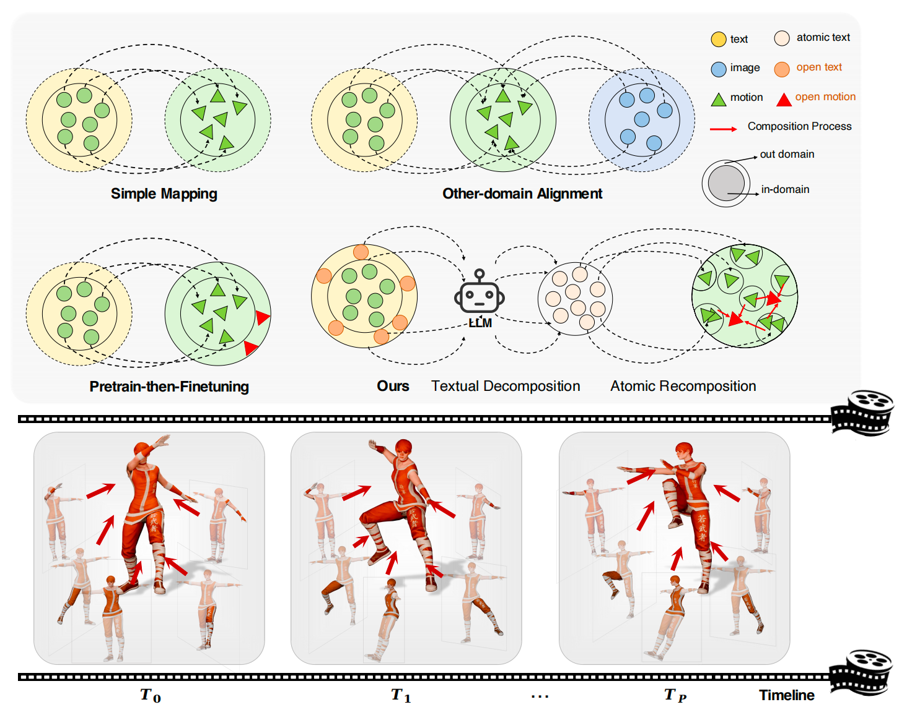
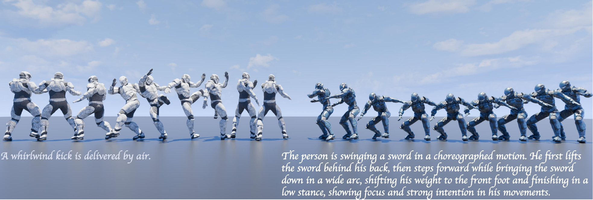
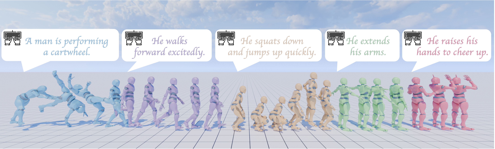
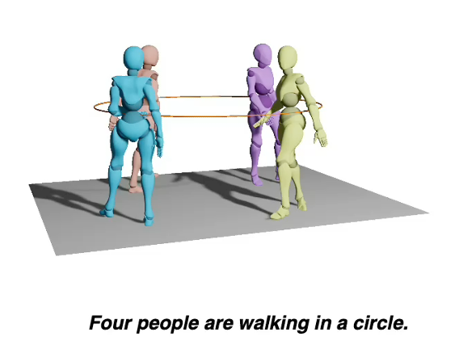
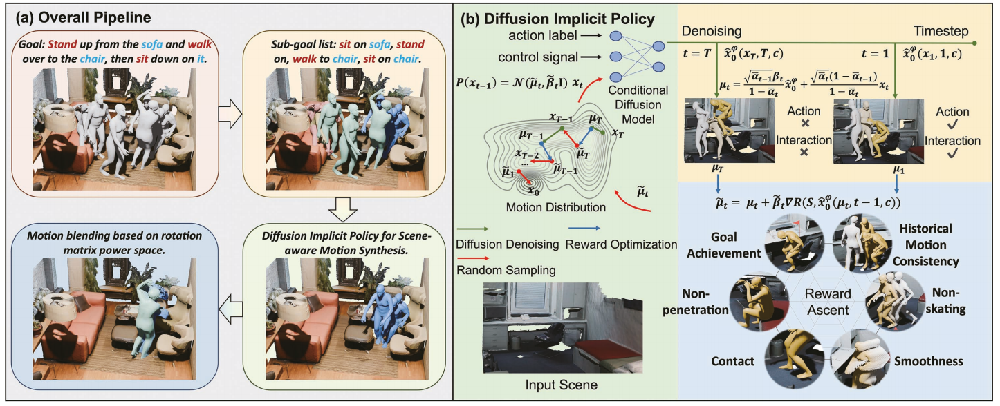
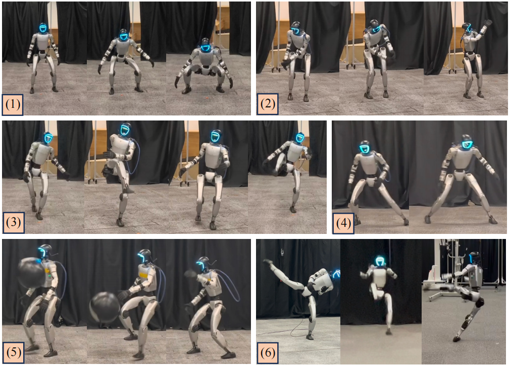
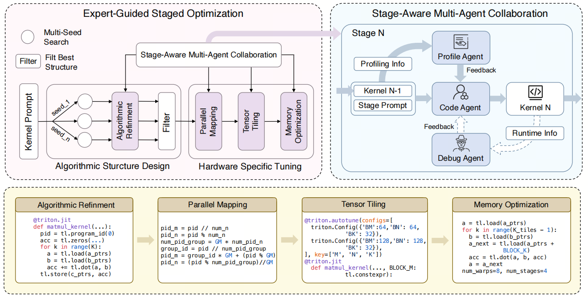

System2
Task Planning & Agent Harness
LLM/VLM reasoning, task decomposition, tool use, execution monitoring.
Humanoid Robot Intelligence · Robotics Foundation Models · Embodied AI
I am a fourth-year Ph.D. student at Shanghai Jiao Tong University, advised by Prof. Lizhuang Ma. My research focuses on building foundation-model-driven humanoid robot intelligence across planning, motion generation, whole-body control, and closed-loop feedback.
My current work studies System2--System1--System0 closed-loop learning for general humanoid loco-manipulation, transferring ego-view human operation knowledge into robot-executable actions, and generalizing whole-body control across skills, environments, and manipulation tasks.
Planning--generation--execution--feedback for humanoid robots.
LLM/VLM reasoning, task decomposition, tool use, execution monitoring.
Large motion models, VLA, World Action Model, pretraining and post-training from large-scale human data.
Stable control, loco-manipulation, vision-guided feedback, physical constraints.
Ego-view operation data · embodiment-free human motion · human video
General humanoid loco-manipulation across skills, scenes, and manipulation tasks
Grouped by the System2--System1--System0 robotics stack.

CVPR 2026 · System1






Research Intern · May 2026 - Present
Vision-guided System1-to-System0 closed-loop control for humanoid manipulation.Research Intern · Jan 2026 - May 2026
Humanoid System1 pretraining and System1-System0 closed-loop co-training.Research Intern · Nov 2024 - Dec 2025
Large motion pretraining, humanoid loco-manipulation, and streaming motion generation.Research Intern · Jan 2022 - Sep 2024
Multi-person and open-vocabulary human motion generation.